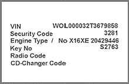

Conditions for programming:
Faults in the immobiliser system must be repaired and fault codes erased before the programming of keys can be done. For keyprogramming all keys must be available, old and new. All keys have to be reprogrammed.
CAUTION: No other Transponder Key has to be next to the ignition lock! During the programming the distance has to be at least 10 cm!
To program the keys a security code must be entered (picture 1). The valid security code can be found in a Car Pass among other codes (picture 2). The safety code is a safety measure to protect the vehicle from unauthorised tampering.
Picture 1

Picture 2
Erase all keys:
Enter the security code (XXXX), press OK.
"Erase keys".
Exit the diagnosis.
Remove key from ignition lock.
Turn ignition on again, enter the diagnosis and check in the data list that no keys are programmed.
Programming:
Insert the key that is going to be programmed in the ignition lock (Other keys at least 10 cm from ignition lock!).
Turn on ignition and enter the security code (XXXX), press OK.
Press "key programming".
Exit the diagnosis.
Remove key from ignition lock.
Turn ignition on again, enter the daignosis and check in the data list that the key has ben programmed.
Repeat from step 1 until the total number of keys are programmed.
Incorrect input of the security code three times or more will lead to a security waiting period (see data list). During this waiting period it is not possible to enter the code. The security waiting time will be doubled for every incorrect input. If the immobiliser control unit is replaced or wrongly programmed it has to be programmed before you can proceed with programming the keys. Programming is not possible with low battery voltage.